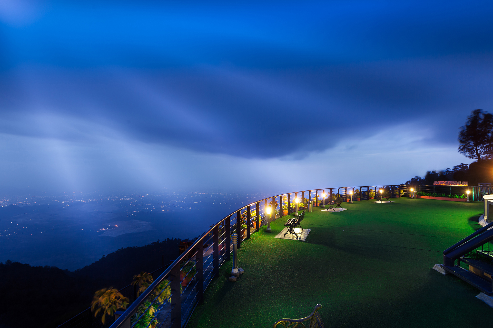

MY BLOG
Welcome to the blog of oblivion
Experimential journeys will make you a storyteller
🚫 Site is under development! 🚫

Dandeli
NATURE & ADVENTURE AT ITS BEST!
January 1, 2022
Nature is at its bountiful best at Dandeli (North Karnataka) making it an ideal holiday destination. The unparalleled scenic beauty of this destination located on the banks of the Kali River is complemented by the exotic wildlife that resides in its tropical forests.
Gokarna
Known for its idyllic beaches and pristine waters
August 25, 2021
Gokarna is a city located in Uttara Kannada district of Karnataka, and is etymologically translated to ‘cow’s ear.’ According to popular mythological belief, it is the place where Lord Shiva emerged from the incarnation of Mother Earth in the form of a cow. Interspersed with ancient temples, the town is home to one of the oldest temples since time immemorial known as Mahabaleshwar, enshrined with Lord Shiva. The town is about 59 km from Karwar, 483 km from Bengaluru, and 238 km from Mangalore.
India
A kaleidoscope of traditions, culture, and vibrant geographies, India speaks for itself as a soul-stirring journey. Snow covered peaks of Himalayas to stretch of coastline, natural greenery to depths of spirituality and clusters of cultural shades. Discover the different facets of this multicolored country as it shapes your vision at every of its fold. With the country's tourism branched into several forms, India has a chunk for every kind of a traveler.
Vidhaan Viswas
Just me, myself and I, exploring the Nature of uknownment.
I have a heart of love and a interest of exploring different places within a short time of period.
I want to share my world with you.
Contact Me Here!
Popular Posts
-

YerCaud
Tamil Nadu -
Hogenakkal
Tamil Nadu -
Udupi
Karnataka -
 NandiHills
NandiHills
Karnataka
Tags
Travel India Mumbai North South Delhi East West Karnataka Beaches Treking Gujrat Night Camping Long Drive